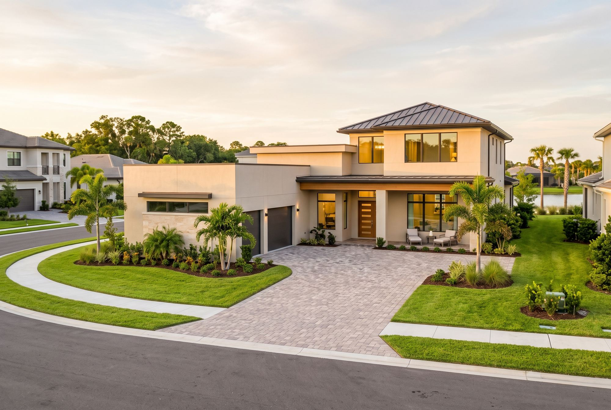
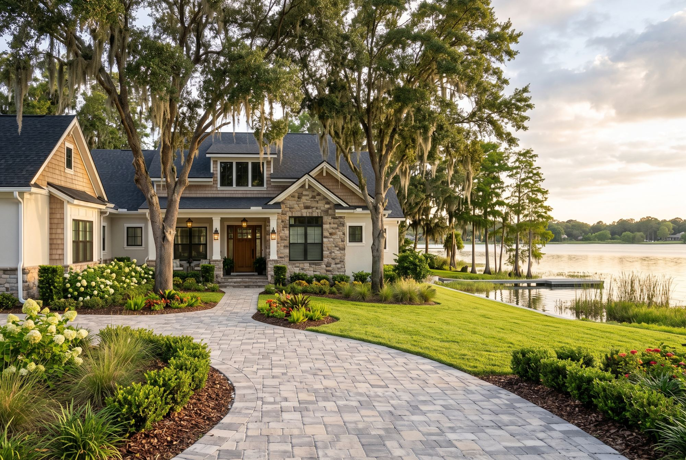
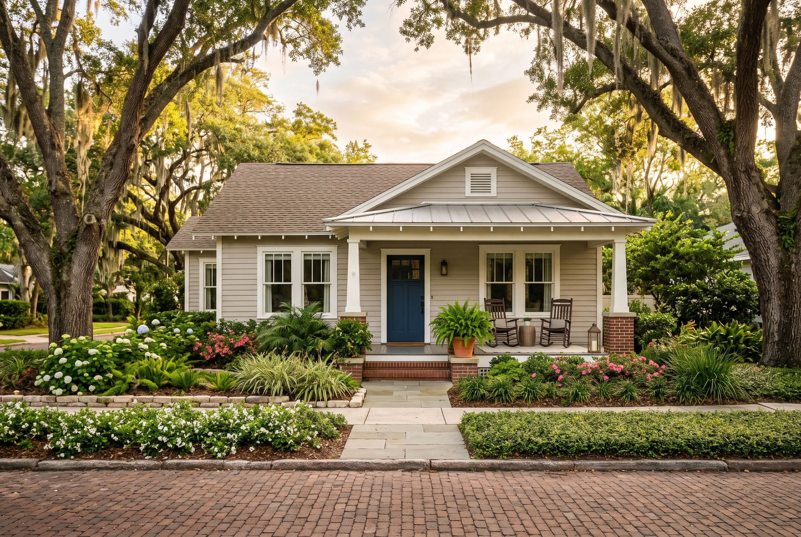
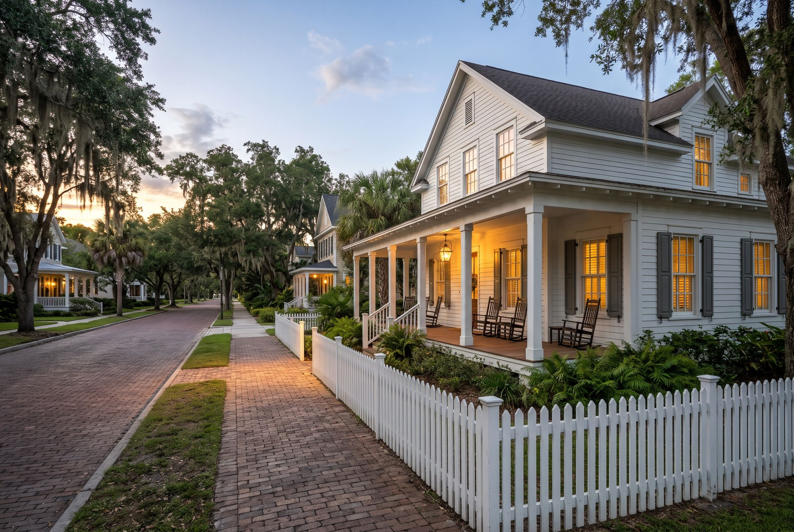
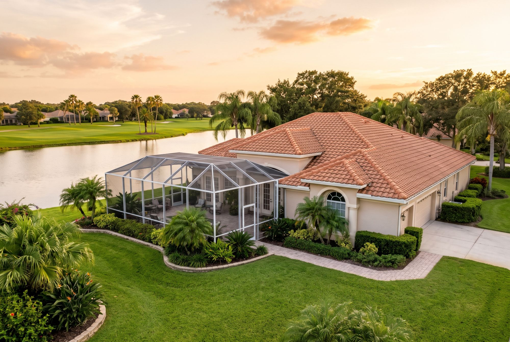
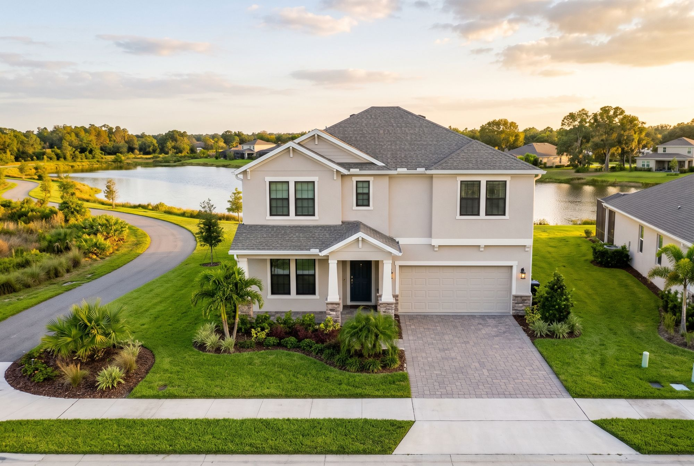

Communities
A few communities. Not every one nearby.
Ask about a place that isn’t listed here, and we’ll tell you what we actually know.
Where we actually know
This list grows as there’s something real to say about a place — not on a schedule, and not to look complete.
-

Lake Nona
New construction, HOA-run common areas, and easy access to the Medical City job corridor — the trade-off is mature trees and an established block.
Read about Lake Nona -

Windermere
Lake access and an HOA or gated-community premium to go with it — the incorporated town is a few thousand people; most of the name-brand inventory sits outside its line.
Read about Windermere -

Winter Park
Park Avenue, brick streets, and a six-lake chain — but only inside the actual city line. The other Winter Park zip code is a different place entirely.
Read about Winter Park -

Lake Mary
A small downtown, Colonial TownPark and a SunRail stop — but a Lake Mary address isn’t always inside Lake Mary. Heathrow is the classic mix-up.
Read about Lake Mary -

Baldwin Park
A former Navy base turned walkable neighborhood around Lake Baldwin. Front porches and a village center, with association fees that matter as much as the price.
Read about Baldwin Park -

Celebration
The planned town with brick streets and a lakeside town center. The pattern book sets the look, and the association rules come with it.
Read about Celebration -

Oviedo
Its own small city near UCF, with Oviedo on the Park and the Cross Seminole Trail. Suburban neighborhoods, with newer townhomes near the center.
Read about Oviedo -

College Park
Bungalows from the 1920s, Lake Adair and Edgewater Drive, close to downtown. Older homes mean the inspection matters more than usual.
Read about College Park -

Dr. Phillips
Restaurant Row, lakes and golf communities in southwest Orlando. Unincorporated, car-based, and every community has its own rules.
Read about Dr. Phillips -

Horizon West & Winter Garden
Two places, one mailing address: a historic downtown on the West Orange Trail, and a large planned area of newer villages. City versus county changes the tax rate.
Read about Horizon West & Winter Garden
Search homes
Search listings on your phone.
Our free home search app runs on the same MLS listings agents work from, across all of these communities and the rest of Central Florida.
Somewhere else in mind
Ask, and we’ll say plainly whether we know it.
Central Florida is larger than this list. If you’re looking at a place that isn’t written up yet, call or send a note — we’ll tell you honestly whether it’s one we can speak to.
Direct line
A phone call, and usually not a long one.
No charge for the first conversation.
Reach us directly